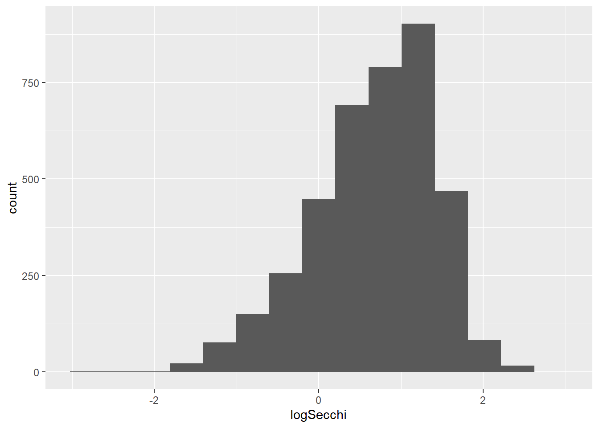
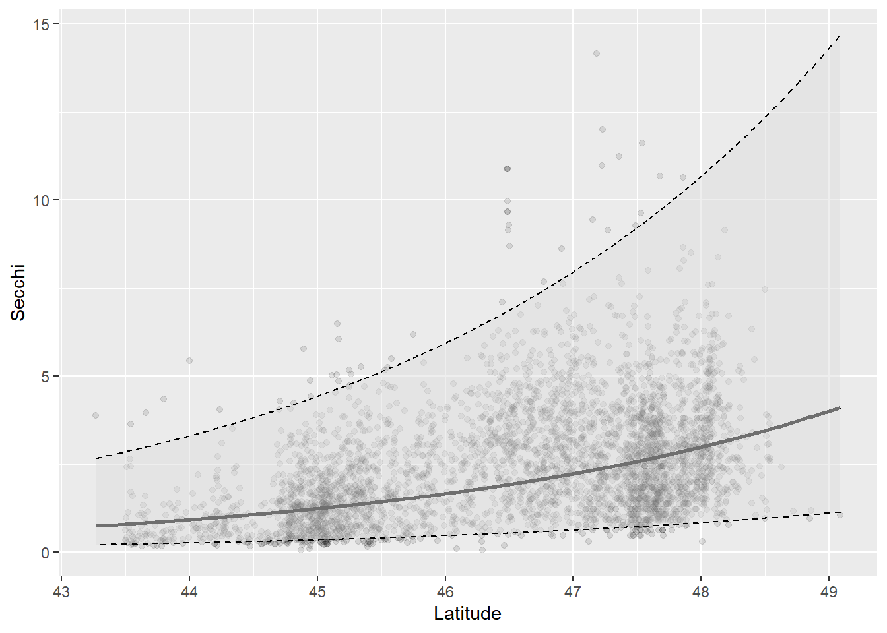
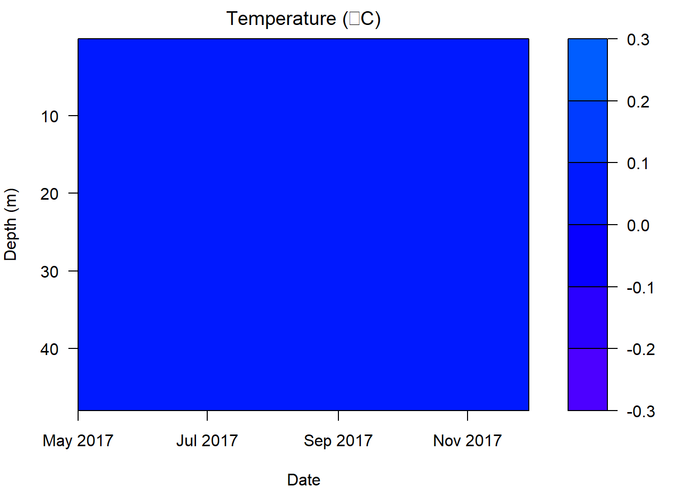

Intermediate R

Introduction
As folks learned in the Introductory session, once we have a basic grasp on how R works, and how and where to find help, the learning process becomes a lot less painful, and we can start to build an appreciation for how convenient it is to have a script we can come back to again and again. To show off this convenience, and the power of R as a statistics program, we will spend the afternoon session walking through some applied analyses and spend a little more time with data visualization tools.
The plan for the Intermediate session is to introduce a subset of the Secchi Dip-In data to do some standard statistical analysis with individual data points from many lakes, and then switch back to data visualization tools to create some isopleths of physical parameters measured at multiple times and depths over time in a single lake using the Otsego Lake data from the Introductory session.
We will work with functions from a bunch of packages within the tidyverse for this session. You can go ahead and load that now. We will load a few others as we go along in this module, and during the live-stream workshops.
Data overview and management
Before we ever get into a statistical analysis, it is always good practice to have a good, long look at the data we are working with to make sure everything makes sense, and to note issues that may rear their heads down the road. Let’s start by reading in part of the Secchi Dip-In data. This particular data set is a subset of the whole, and contains only those data that were collected in the state of Minnesota. We read the data in with the argument stringsAsFactors = FALSE because there are a lot of string variables in the data, and factors can add extra handling time to our workflow (see Introductory session tutorial ).
So, what are we working with here? Let’s have a look. Remember from the Introductory session that it might be useful to understand how R sees your data first and foremost. The most reliable method for doing this with dataframes is to look at the structure of your data using str().
# Like this:
str(minnesota)
'data.frame': 421636 obs. of 8 variables:
$ Water.Body: chr "Unnamed" "Unnamed" "Unnamed" "Unnamed" ...
$ GNIS.ID : num 23001 23001 23001 23001 23001 ...
$ GNIS.Class: chr "" "" "" "" ...
$ Elevation : int NA NA NA NA NA NA NA NA NA NA ...
$ Latitude : num 46.5 46.5 46.5 46.5 46.5 ...
$ Longitude : num -93.6 -93.6 -93.6 -93.6 -93.6 ...
$ Year : chr "1977" "1977" "1977" "1977" ...
$ Secchi..m.: num 1.52 1.68 1.68 1.68 1.83 ...Now that we have an idea of what the data set looks like, let’s take a little closer look. First, there are a couple of things that we can do that will clean up our code down the road a little bit. Let’s have a quick look at our column names again.
names(minnesota)
[1] "Water.Body" "GNIS.ID" "GNIS.Class" "Elevation" "Latitude"
[6] "Longitude" "Year" "Secchi..m."Most of these are nice and clean, but there are some things that happen when we read data into R from Excel files. One of the things that R does is to replace all spaces and special characters with periods (.). This can make things a little difficult to read when we write code. For example, the column that said Secchi (m) in our Excel spreadsheet now says Secchi..m.. This confusion is compounded by the fact that some programming languages and R functions rely on the . for special purposes.
We are not going to replace all of the names, because we are not going to work with all of the columns, but let’s replace a couple of these that we are definitely going to use (if only to show how this works). For now, let’s just change the names for Secchi..m..
Remember that the result of names(minnesota) is a vector, and we can replace individual elements of that vector. We just need to know the index of the element we wish to replace. In this case, Secchi..m. is the 8th column of the dataframe minnesota.
Here is how it works:
Have a quick look to make sure you are happy with the new names.
Data manipulation
Now that we have had a quick look at our data, and we have made some changes for the sake of convenience, let’s dig a little deeper. This afternoon, we are going to use Secchi as our response, or dependent variable to demonstrate some basic statistical techniques in R. Before we can do any actual statistics, though, it is good practice to scrutinize the data we intend to use.
In order to assess where the data come from, we will summarize them by waterbody and then map them out as spatial data in R. GIS in R??? Yup.
First, let’s use the pipeline workflow from the tidyverse to summarize the data like we did in the Introductory session:
Spatial data
Before we go anywhere near our response, we might take a look at where our data come from since we’ve been talking about counties and the like. This is an important part of data QC, and is also a great opportunity to show off some of the GIS capabilities of R.
Let’s read in a shape file of the Minnesota border. There are lots of packages that will handle this for us. I am using the rgdal and sp packages here because of familiarity, and because I know that the workflow will play fairly well with ggplot2. I will use the :: notation below so you know which functions come from which package, but you do not need to do so as long as both packages are installed and attached (loaded).
First, read in the shape file.
Next, we will convert our points from the minnesota data into a projected coordinate system that will allow us to overlay the data points onto the outline of the state and do some QC. This will take a few steps.
Get rid of the points with missing coordinates. We aren’t going to be able to use these for any kind of spatial analysis.
# Remove those points with missing longitude and latitude
d <- minnesummary %>%
filter(!is.na(Latitude) &
!is.na(Longitude) &
Longitude <= 0 &
(Latitude >= 40 & Latitude <= 60))We will create an object (ds) to hold the SpatialPoints-class object that contains decimal degrees.
# Load sp package
library(sp)
# Make an intermediate object to modify
ds <- d
# Assign longitude and latitude to a
# SpatialPoints-class obj. This converts d to
# a spatial dataframe
coordinates(ds) <- c("Longitude", "Latitude")Define the projection string:
We can convert these into UTM pretty easily, too:
# Get UTMs for the longitudes and latitudes using
# the coordinate system of our shape file
coord_utm <- sp::spTransform(ds, CRS("+init=epsg:26911"))Assign the UTMs to variables in our data set
# Assign the coordinates to new columns
# in our dataframe
d$x <- coord_utm@coords[, 1]
d$y <- coord_utm@coords[, 2]
coordinates(d) <- ~ x + y
proj4string(d) <- CRS("+init=epsg:26911")Now, project the coordinates for our data to match the CRS of the state outline just to be sure that everything matches.
We can plot these quickly to get an idea of the spread we are working with:
# We'll use the ggplot2 library
library(ggplot2)
# Make the plot
ggplot() +
geom_polygon(
data = fortify(MN),
color = "black",
fill = "gray40",
aes(x = long, y = lat)
) +
# coord_sf() +
geom_point(
data = data.frame(d),
mapping = aes(x = x, y = y)
) +
labs(x = "Easting", y = "Northing") +
ggtitle("Minnesota lakes") +
theme(
plot.title = element_text(hjust = .5),
text = element_text(size = 10)
) +
# Adjusting output width: distorts CRS
# but can actually see the plot
coord_equal(ratio = .5)
Holy smokes!! What happened here?
It looks like we have a few data points from the arctic. I know Minnesota is cold this time of year, but this might be a little ridiculous!
These types of errors are really common, so it is important to check your data, even if you are the one who entered it. This one is probably just a case of someone having swapped longitude and latitude, but we’re in the middle of a workshop, so we can’t assume that - let’s get rid of them.
Luckily, we can take care of this pretty easily using the spatial tools we’ve been working with.
# Perform a spatial intersect between
# the Minnesota shapefile (polygon) and
# the SpatialPoints object.
# Note that order is important here.
proj4string(d) <- proj4string(MN)
ins <- sp::over(d, MN)
# Then, we can drop the points that
# do not not intersect with the polygon,
# now saving over the original data set.
dd <- d[!is.na(ins[, 1]), ]
# Get the modified data back out of the
# SpatialPoints object
minnesota_sp <- dd@dataWe can plot the polygon and the points again just to double check:
# We'll use the ggplot2 library
library(ggplot2)
# Make the plot
ggplot() +
geom_polygon(
data = fortify(MN),
color = "black",
fill = "gray60",
aes(x = long, y = lat)
) +
coord_sf() +
geom_point(
data = data.frame(dd),
mapping = aes(x = x, y = y)
) +
labs(x = "Easting", y = "Northing") +
ggtitle("Minnesota lakes") +
theme(
plot.title = element_text(hjust = .5),
text = element_text(size = 10)
)
Wow! That looks a lot better!
Of course, we could really snaz this up!
# Make the plot...again
ggplot() +
geom_polygon(
data = fortify(MN),
color = "black",
fill = "gray90",
aes(x = long, y = lat)
) +
coord_sf() +
geom_jitter(
data = data.frame(dd),
mapping = aes(x = x, y = y, color = dd$Secchi),
alpha = .5, size = 3
) +
labs(x = "", y = "") +
ggtitle("Secchi depth (m)") +
theme(
plot.title = element_text(hjust = .5, face = "bold"),
text = element_text(size = 14),
legend.position = "right",
legend.title.align = 0,
panel.background = element_blank(),
axis.ticks.y = element_blank(),
axis.text.y = element_blank(),
axis.ticks.x = element_blank(),
axis.text.x = element_blank()
) +
scale_colour_gradientn("", colours = c("gray90", "black"))
Super! That may seem like a lot of work this time around, but the next time you want to do something like this, you will be ready to fly. On to the actual data!
Data exploration
Now that we at least have a handle on where our data come from, we can start to poke around a bit more.
To start with, let’s take a quick look at Secchi in our original minnesota dataset using a histogram. If we were going to do some statistical analyses, this would be our response of interest in the data set!

From this plot alone, there are a few things that should be obvious.
First, we can see that the distribution of our response is right-skewed, with many more observations near zero than near the maximum. This should make intuitive sense based on the map we made.
Second, perhaps more nuanced, is that there are no values less than zero. For anyone who has spent some time using a Secchi disk, the reason for this is probably obvious. We can’t have negative values for light penetration into the water column[citation needed]. This variable is zero bound. This is actually common for a lot of parameters we measure in lake management because we frequently are interested in concentrations, depths, areas, and other non-negative quantities.
We will need to think about both of these characteristics as we move into statistical analyses. One of the central assumptions of modern regression tools relates to normality of residuals, which in the absence of heterogenous groups, can initially be approximated using a histogram of the response.
Data transformations
We can handle both of these problems by log-transforming our data like this:
We can plot histogram of the residuals again to see what it did:

Our residuals look more like a normal distribution now, although there is still some skew. Now it is just going in the other direction [eye roll].
As you can see, our response variable is no longer constrained to be greater than zero on the log scale, so we don’t have to worry about getting negative predictions from any of the statistical models that we make now either. We’ll just have to deal with that on the back end.
Now we can move forward with some statistics!
Introductory statistics in R
Let’s start with the simple case of comparing Secchi between lakes and reservoirs. If you have a basic understanding of statistics, you might immediately realize that this is a comparison of a continuous variable between two groups. We have a couple of paths forward here. We could either set aside distributional assumpstions and use non-parametric methods, or we could assume some distribution for our error structure and proceed using parametric or semi-parametric statistics.
In either case, we are going to have to make sure we only have data for lakes and reservoirs first. (If you looked closely at the data you will have realized that there are also records for Swamp and Bay in our dataset.)
To get rid of the observations related to Swamp and Bay for now, let’s just drop those levels from our GNIS.Class variable in the minnesummary data set.
# Haha, like the abbreviation for Holdren et al. (2006)!
mlr <- minnesummary %>%
filter(GNIS.Class == "Lake" | GNIS.Class == "Reservoir")Wilcoxon rank-sums test
Let’s start by fitting a quick Wilcoxon rank-sums test (aka Mann-Whitney U-test). While our options for non-parametric statistics are limited in complexity, they do not require distributional assumptions, and they tend to be more conservative than parametric tests, especially under limited sample sizes (not the case here).
Here is how we do it:
# Wilcox test to assess the null hypothesis
# that there is no difference in Secchi between
# lakes and reservoirs.
wilcox.test(Secchi ~ GNIS.Class, data = mlr)
Wilcoxon rank sum test with continuity correction
data: Secchi by GNIS.Class
W = 339034, p-value = 4.345e-10
alternative hypothesis: true location shift is not equal to 0Okay, if you have never done a Wilcox test by hand, or even in Excel, please appreciate how ridiculously easy this is. But, more importantly, what is going in the output here?
We can see that we have conducted a Wilcoxon rank sum test. Second, R gives us a friendly reminder of what our data were that went into this. Next, we have the actual statistics for the test, including the test statistic W and the p-value for the comparison. With the handy-dandy alternative hypothesis that R provides us, we can conclude that since p < 0.05 we reject the null hypothesis that there is no difference between groups.
While this is useful for making inference, we don’t get a good sense of how the group means actually differed from this test (although we could graph it). For that, we need to start making some assumptions about our data and the shape of the error associated with those data.
Parametric statistics in R
Parametric statistics rely on some basic assumptions about or data and the error structure around our observations. There are a number of fundamental assumptions that guide our forays into what is essentially “the rest of statistics”. How we deal with these assumptions can range from doing nothing, to data transormation, to use of alternative model structures that allow us to shift or relax them.
What are these assumptions? Glad you ask!
Assumptions of linear models
Linear models you say? Yes. While we don’t have time to go in the ugly math behind this (ahem, the beautiful, unifying math behind this), suffice to say that most of the statistics we use in aquatic research are special cases, or generalizations, of the linear model. This includes things like t-tests, linear regression, ANOVA, ANCOVA, GLM, GLMM, GLS, GEE, and even multivariate statistics. The same holds true whether we are working with classical frequentist tools relying on least-squares estimation and maximum likelihood, or Bayesian methods using MCMC estimation. That means we always need to have these assumptions in mind.
Briefly, these assumptions include:
1. Independence of observations.
2. Normality of residuals (with mean=0).
3. Homogeneity of variances (i.e. homoscedasticity).
We will discuss quickly in the afternoon session, but a more detailed explanation of each can be found here . This is definitely something you should be comfortable with before getting crazy with the stats.
The t-test
The t-test is our go-to tool for comparing two group means with parametric statistics. Even when we use analysis of variance (ANOVA) to test for differences in means between more than two groups, we still need to use t-tests to follow up and determine pair-wise differences (usually using a Tukey HSD or analagous test to control family-wise error rates).
Using a t-test in R is pretty straightforward. For this example, we will use a t-test to test the null hypothesis that there is no difference in Secchi between Lake and Reservoir classes. To do this, we use the function t.test().
# T-test to assess the null hypothesis
# that there is no difference in Secchi
# between lakes and reservoirs in Minnesota.
# We use logSecchi to meet assumptions
# of normality.
# We can specify this one using a formula.
# To be conservative here, we will assume
# that we have unequal variances using
# one of the optional arguments. Note that
# the default in R is to assume that variances
# are not equal, and this defaults to
# a Welch's t-test that uses a calculated df
# to adjust the calculated test statistic.
t.test(logSecchi ~ GNIS.Class, data = mlr, equal = FALSE)
Welch Two Sample t-test
data: logSecchi by GNIS.Class
t = 6.1266, df = 166.94, p-value = 6.242e-09
alternative hypothesis: true difference in means is not equal to 0
95 percent confidence interval:
0.2734437 0.5334695
sample estimates:
mean in group Lake mean in group Reservoir
0.7184582 0.3150016 Yay, more output!
Similar to the wilcox.test, the output of our t.test gives us the test that was used, the data provided to the function, the test statistics (now with df), and the alternative hypothesis to be accepted if p < 0.05. But, in contrast to the Wilcox, we have a little more information to go on.
This time, we get an actual confidence interval our estimate of the difference between groups. Here, we see that we are 95% confident that the true difference in logSecchi between Lake and Reservoir is between 0.27 and 0.53. Note that this difference is positive because we specified x as the logSecchi for Lake and y as the logSecchi for Reservoir. If we had reversed this, our 95% confidence interval on the estimated difference would have used negative values. In either case, we can now say that lakes have greater Secchi depths than reservoirs.
R also tells us that the mean of logSecchi is 0.72 for Lake and 0.32 for Reservoir. We can bring these back to the real scale using the function exp to say that the mean of Secchi is 2.05 for Lake and 1.37 for Reservoir.
We could go about showing these differences graphically using (for example) a violin plot:
ggplot(
data = mlr,
aes(
x = GNIS.Class, y = logSecchi,
color = GNIS.Class, fill = GNIS.Class
)
) +
geom_violin(alpha = 0.10, draw_quantiles = 0.50) +
geom_jitter(width = 0.1, alpha = 0.20)
Analysis of variance
It is only a small step to move from a t-test to analysis of variance (ANOVA) conceptually, and this also requires only a small change to code in R. In theory, ANOVA is usually used to compare means of a continuous response when we have three or more groups. In practice, it is mathematically equivelant to a t-test if we have only two groups (the F-statistic is, in fact, just the sqaure of the t-statistic).
To demonstrate this, and to keep ourselves from being swept afield with another data set, let’s demonstrate ANOVA using the same scenario.
It can be more convenient to store the results of ANOVA in an object than just dumping the output to the console, so let’s start there. First, we will fit our ANOVA with the lm function (stands for linear model) because this is the most general tool for us.
# Fit an ANOVA to test for differences in
# means between groups
mod <- lm(logSecchi ~ GNIS.Class, data = mlr)Now, before we get into looking at p-values here, it is important that we diagnose the model first. But, we’ve only got three hours to get through this so we’ll skip it for now.
We can make an ANOVA summary table in R using the lowercase anova function to get overall factor significance.
# Get ANOVA summary for the model
anova(mod)
Analysis of Variance Table
Response: logSecchi
Df Sum Sq Mean Sq F value Pr(>F)
GNIS.Class 1 24.27 24.2653 45.266 2e-11 ***
Residuals 3510 1881.56 0.5361
---
Signif. codes: 0 '***' 0.001 '**' 0.01 '*' 0.05 '.' 0.1 ' ' 1Here, we can see that out factor GNIS.Class had a significant effect on logSecchi, and we can reject the null hypothesis that there is no difference between any of the group means.
To poke this a bit further, we would ask R to conduct a multiple-comparisons test to examine pair-wise differences if we had more than two groups. I usually use a TukeyHSD for this. To use this test, we will just need to wrap our model in the aov function:
TukeyHSD(aov(mod))
Tukey multiple comparisons of means
95% family-wise confidence level
Fit: aov(formula = mod)
$GNIS.Class
diff lwr upr p adj
Reservoir-Lake -0.4034566 -0.5210296 -0.2858836 0The output from this function produces a mean and CI of the difference for each pair-wise comparison, along with a p-value for the test. In this case, we see that we only have one comparison, but that logSecchi is significantly different between groups.
From there, we can go on to make group-specific boxplots of the response to make the difference clearer for the reader. One of the cool things about doing this in R is that the code for the boxplot above wouldn’t change, even if we had more than two groups in our data.
Linear Regression
Non-parametric statistics, t-tests, and ANOVAs are great for testing hypotheses about differences between groups, but they don’t really allow us to examine changes that occur along continual gradients. In our fields, those kinds of changes are often the things we are actually interested in. For example, we may wish to understand how temperature or secchi change with year to quantify long-term trends. To do this, we will rely on linear regression.
Linear regression takes the familiar form of the equation for a line:
\(y = mx + b\)
Where \(y\) is the dependent variable, \(b\) is the y-intercept, \(m\) is the slope of the line, and \(X\) is the independent variable.
In statistics, we write this as
\(y_{i} = \beta_{0} + \beta_{j} \cdot X_{j,i} + \epsilon_{i}\)
Where \(y_{i}\) is the ith value of the dependent variable, \(\beta_{0}\) is the y-intercept, \(\beta_{j}\) is the slope of the line, \(X_{j,i}\) is an independent variable, and \(\epsilon_{i}\) is our error (assumed to have a mean of zero so it can be dropped- that’s why it is important to check).
More generally, we could extend this to have an arbitrarily large number of slopes and independent variables (i.e., multiple regression):
\(y_{i} = \beta_{0} + \sum_{\substack{j=0}}^k (\beta_{j} \cdot X_{j,i}, ..., \beta_{k} \cdot X_{k,i}) + \epsilon_{i}\)
What fun!
How about fitting this kind of model in R? It will take us less time than it did to write out the equations.
Here, we will fit a linear regression to test the effects of Latitude on logSecchi. To do this, we can stick with the lm() function.
Next, we will fit the model using the same lm() function that we used for ANOVA above. The reason we can do this is that ANOVA, t-tests, and linear regressions are all just specific cases of the linear model.
We will fit a model testing the effect of Latitude on logSecchi. But, first we’ll drop rows that don’t have Latitude information like we did when we were mapping.
# Drop rows with missing Latitudes
mn_data <- minnesummary %>%
filter(!is.na(Latitude) &
(Latitude >= 40 & Latitude <= 50))
# Now fit the model
lmod <- lm(logSecchi ~ Latitude, data = mn_data)We can get the regression coefficients for our model directly from a summary of a fitted model object.
summary(lmod)
Call:
lm(formula = logSecchi ~ Latitude, data = mn_data)
Residuals:
Min 1Q Median 3Q Max
-3.5883 -0.4299 0.0662 0.4730 1.7960
Coefficients:
Estimate Std. Error t value Pr(>|t|)
(Intercept) -13.002124 0.396470 -32.8 <2e-16 ***
Latitude 0.293665 0.008513 34.5 <2e-16 ***
---
Signif. codes: 0 '***' 0.001 '**' 0.01 '*' 0.05 '.' 0.1 ' ' 1
Residual standard error: 0.6498 on 3845 degrees of freedom
Multiple R-squared: 0.2363, Adjusted R-squared: 0.2361
F-statistic: 1190 on 1 and 3845 DF, p-value: < 2.2e-16Here, (Intercept) is the y-intercept for our model, and Latitude is our “slope”. In this case, we see that our y-intercept is significantly different from zero (p = 3.3e-208), and we detected a significant effect of Latitude on logSecchi (p = 2e-227). The interpretation of the latter is that the slope is not equal to zero.
Looking a little closer at the output, we can also see that we have explained about 20% of the variability in logSecchi using Latitude as an explanatory variable (R2 = 0.236). But, let’s plot the result anyway.
In order to plot the result of our model, we need to make some predictions from it first. This is super easy to do in R. You’ll get a warning that you are making predictions from the observed data even though this is supposed to be fore future predictions on new data - fine for now, can talk about that one when we have more time!
We just need to undo our log transformation once we have our predictions so we can plot them:
Let’s have a look at what our predictions look like:
# Take a look at the first few
# rows of the preds dataframe
head(real_preds)
fit lwr upr
1 2.233876 0.6247694 7.987270
2 1.695155 0.4740989 6.061081
3 2.066277 0.5779063 7.387878
4 2.996990 0.8380215 10.718042
5 1.477361 0.4131559 5.282737
6 2.117865 0.5923322 7.572362Now we can smash them back together with the raw data:
ggplot(mn_preds, aes(x = Latitude, y = Secchi)) +
geom_point(alpha = 0.10) +
geom_line(aes(y = fit), size = 1, color = "black") +
geom_ribbon(aes(ymin = lwr, ymax = upr),
color = "black",
fill = "gray87",
alpha = .5,
lty = 2,
lwd = .5
) +
theme(legend.position = "none")
Wow, this graph is almost as underwhelming as the R2 for the model that was used to create it. In fact, it looks like we’re under-predicting basically all of the extremely high values of Secchi. This should highlight the importance of communicating effects. If we had just reported p-values, this would have gone un-noticed and someone might have misused the result.
[gets off stump]
For a more exciting linear regression example, you can have a look at this thermocline analysis.
Response surfaces (isopleths)
When we have more than one continuous variable in a regression model, it can be helpful to think about surfaces instead of lines. While it sounds difficult conceptually, these are actually fairly common tools in our everyday lives. Elevation contours are one such example of a response surface (think formula=elevation~latitude*longitude in the simplest sense).
In lake management, we frequently run across these kinds of applications when we look at bathymetric maps and isopleths.
Here, we will investigate some basic tools for visualizing response surfaces, and specifically, we will create some isopleths.
For this example, we will go back to the otsego data that we used in the Introductory session and start by making an isopleth of temp for a single year. In this crowd, the concept probably requires less explanation than any of the statistics we’ve used so far, but basically we want to come up with a 3-dimensional way to visualize changes in temperature across time (days) and space (depth).
Let’s read in the data
One of the first things that we are going to have to deal with is the formatting of dates in this data set. Right now, R sees the column date as a factor with 539 levels. To do this, we will need to first convert date to character, and then to Date by specifying the format.
Converting from factor/character to Date is probably one of the most frustrating aspects of working in R early on, so take your time and make sure you understand what this code is doing.
# Data formatting & extraction
# First, we convert the date column
# to a character string. We pass the
# result directly to the as.Date
# function, and along with that we
# specify a format so R knows where it
# is looking for specific elements of
# the date info we are trying to pass.
otsego$date <- as.Date(
as.character(otsego$date),
format = "%m/%d/%Y"
)Next, we could subset the data, retaining only those observations for a given year. But, we are better off just using all of the data, and then zooming in on our contour plot by setting the x-axis (date) to the time period we desire (see below).
Then, we will omit any of the NA values in our data to make the next part a little easier to do.
Finally, we just do a little math trick to reverse the order of depths for interpolation and plotting in order to make the surface of the water show up at the top of our graphs. We will undo this when we label the graph.
Now, we are ready to do the math behind the isopleth and plot it. To do the math, we need to load the akima package:
Next, we interpolate temp across date and depth. The interpolation we are using is basically just a bunch of linear regresions to predict temp for values of date and temp across a regular grid.
# Create a data frame containing the
# x, y, and z variables of interest
plotter <- data.frame(x = lim$date, y = lim$depth, z = lim$temp)
# Sort it so we have ascending values of x and y
plotter <- plotter[with(plotter, order(x, y)), ]
# Make a regularly spaced x, y, z grid using
# linear interpolation from the akima package
im <- with(
plotter,
interp(x, y, z,
duplicate = "mean",
nx = length(unique(lim$date)),
ny = length(unique(lim$depth))
)
)To wrap it all up, we can make the plot. This looks like a lot of code, but it is mostly comments. For this plot, we will zoom in on year 2017 by limiting the range of the x-axis.
# Plot the isopleth
# filled.contour is the function that actually
# makes the contour plot. This is the same function
# that is used in the wtr.heat.map function in the
# RLakeAnalyzer package, but it is executed from
# within a convenience wrapper there, so it is
# hard to customize.
# I tend to work with the filled.contour
# function from the graphics package (included
# in base R and loaded by default). This is
# just a preference driven by need for
# more flexibility.
# Set up plotting window margins
par(mar = c(4, 4, 2, 8))
# Make the graph
filled.contour(
im$x, # Variable on x-axis (date)
im$y, # Variable on y-axis (depth)
im$z, # Response (wq parameter)
# Could also choose 'grey.colors' or 'terrain.colors'.
# If you want the ramp to go the other way,
# just delete the 'rev'. Note that you will
# need to change the 26 in parentheses to match
# the number of levels that you actually have or
# want to display.
col = topo.colors(26),
# I don't like in-figure titles.
# You can add one, though. You will, however,
# need to change the 'mar' argument in the call
# to par above.
main = expression(paste("Temperature (", degree, "C)")),
# Specify y-axis limits.
ylim = c(min(im$y), max(im$y)),
# Specify x-axis limits. In
# this case, we are "zooming in"
# on year 2017
xlim = c(as.Date("2017/05/01"), max(im$x)),
# X-axis label
xlab = "Date",
# Y-axis label
ylab = "Depth (m)",
# Axis options
plot.axes = {
# This is how we include
# countour lines
contour(
im$x,
im$y,
im$z,
nlevels = 26,
drawlabels = FALSE,
col = topo.colors(26),
lwd = 1,
lty = 2,
add = TRUE
)
# Y-axis
axis(2,
at = seq(0, -50, -10),
labels = seq(0, 50, 10)
)
# X-axis
axis(1,
at = seq(as.Date("2017/05/01"),
by = "2 months",
length.out = 16
),
labels = format(
seq(as.Date("2017/05/01"),
by = "2 months",
length.out = 16
),
"%b %Y"
)
)
}
)
One of the things we have to be careful about with these graphs is that they are models, and if we are missing data at critical time periods, then our models are only as good as our data allow. This can be seen in the plot above. There is a gap in info from late November 2017 when the lake starts to turnover and conditions got rough until early January, when safe ice had set up for winter sampling. The result, in this case, is the apparent loss of the 4\(^\circ\)C layer of water in the lake.
Have a go at these isopleths again, substituting DO or pH. You should find that the only code that needs to be changed is the variable used for z when you create the plotter data above, and the title of the plot.
If you are struggling, have a look at these cool isopleths for pH and dissolved oxygen to get a better idea of the workflow.
This work is licensed under a Creative Commons Attribution 4.0 International License. Data are provided for educational purposes only unless otherwise noted.